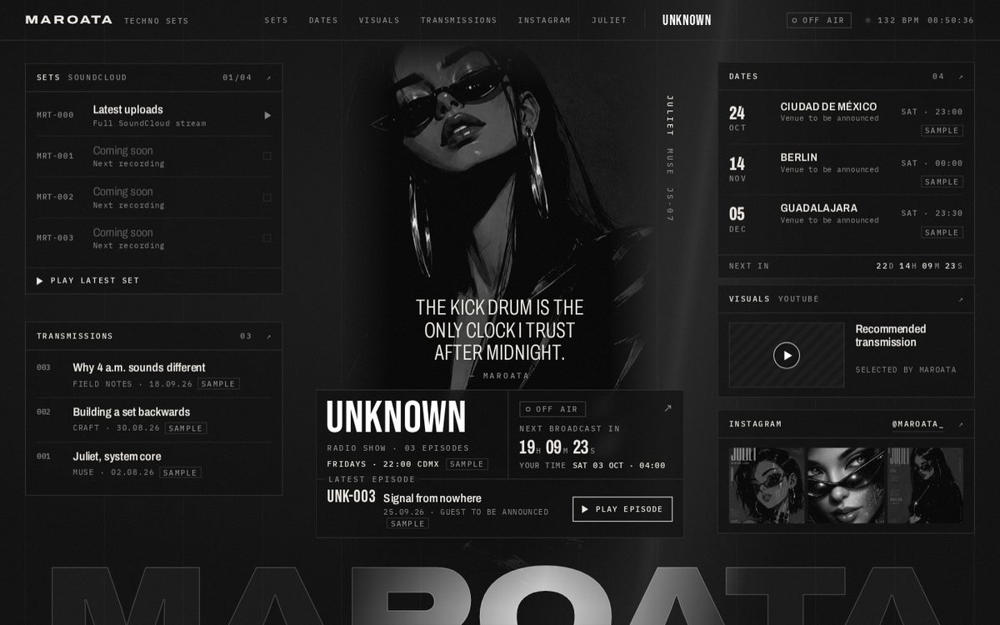
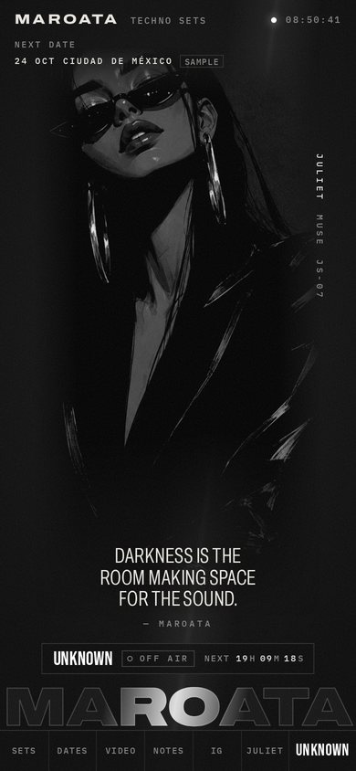
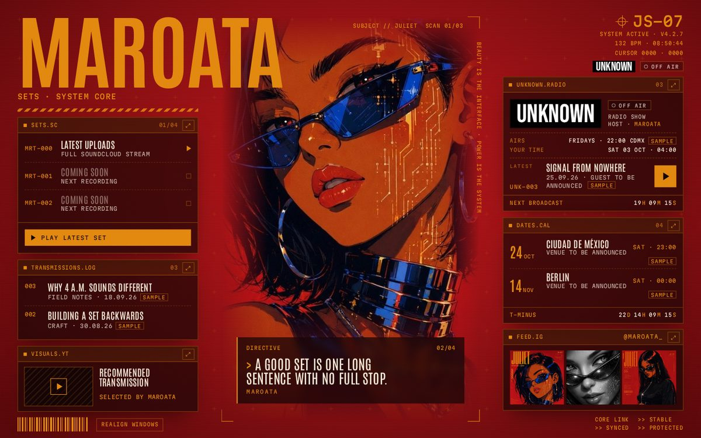
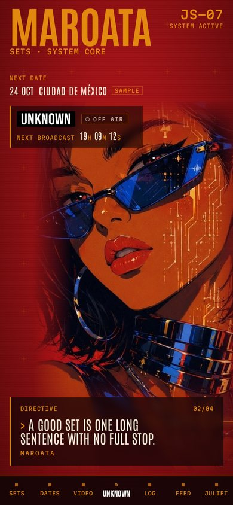
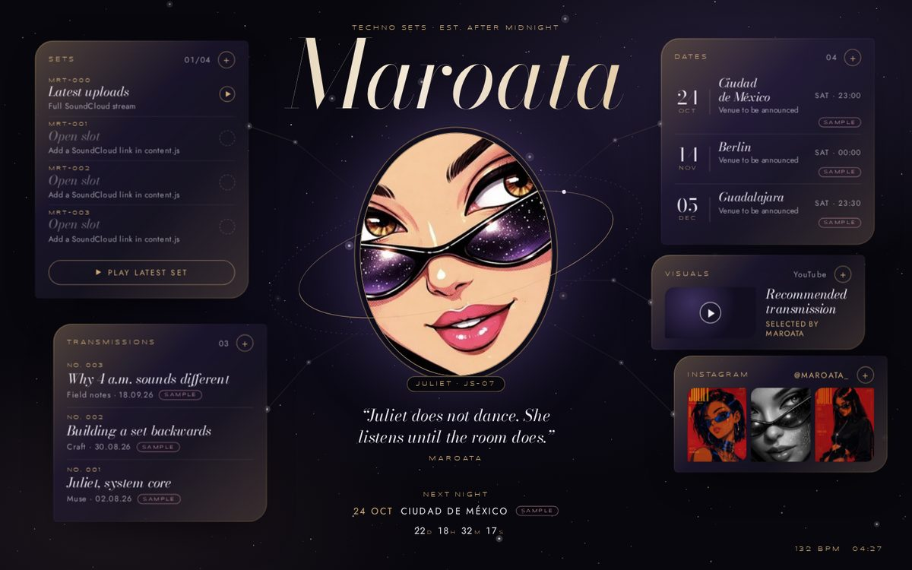
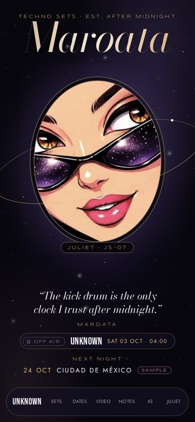

Option 1
Open Bunker →
Bunker
Berlin concrete after dark. Pure black and white, Juliet in monochrome, and a slow beam of light that sweeps the room and lights up the MAROATA wordmark as it passes.
- Strict 12-column grid, hairline modules
- Instagram and video turn to colour on hover
- Quietest and most minimal of the four


Option 2
Open System Core →
System Core
The site is Juliet's own interface. Her poster red and amber type, three portraits cycling in a scanner, and HUD windows you can drag anywhere on screen.
- Short boot sequence on first visit
- Quotes typed out as system directives
- Most Juliet-forward and most playful


Option 3
Open Nocturne →
Nocturne
Inside Juliet's lenses. A live star field, a fashion-magazine masthead over a locket portrait, and glass cards that drift on gold constellation lines.
- Champagne gold and lens violet
- Cat-eye shaped corners on every card
- Most luxurious and editorial